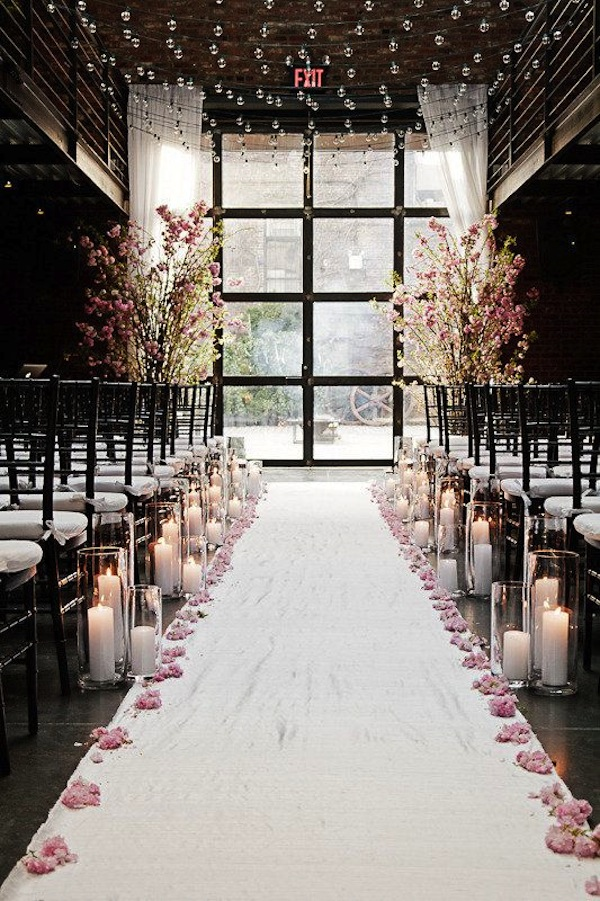
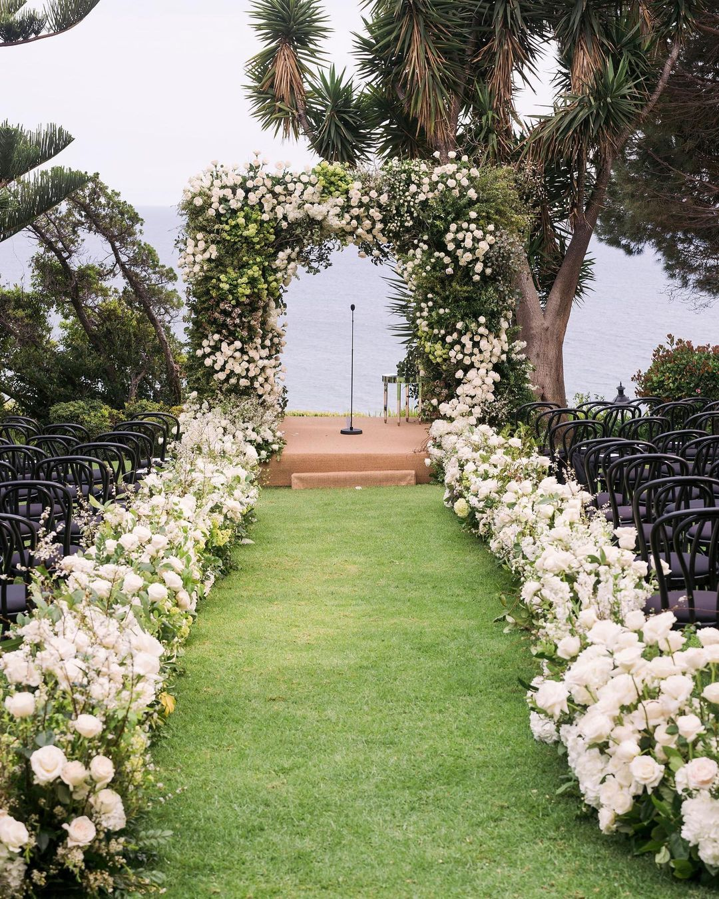

You handle the 'I Do,' we’ll handle the 'To-Do.'
|
 indoor wedding event |
 outdoor wedding event |
A wedding is a joyous, multi-day celebration marking the union of two people through sacred vows, cultural rituals, and festive gatherings with loved ones. Key events often include a vibrant engagement party, a welcoming rehearsal dinner, the formal ceremony (such as a Nikah or church vows), the lively Baraat procession, emotional farewells like the Rukhsati, and a grand reception feast.
Choosing between an indoor or outdoor wedding involves weighing comfort against scenic beauty. Indoor weddings offer a climate-controlled, stress-free environment where décor can be fully customized without worrying about rain, wind, or bugs, making it ideal for a polished, intimate, or winter event. However, indoor venues can be more expensive and limited in space. On the other hand, outdoor weddings provide a stunning, natural backdrop that requires less decoration and offers more space for larger guest lists. While highly romantic, they come with the significant risk of unpredictable weather, necessitating a solid backup plan and extra logistics for lighting, sound, and guest comfort.